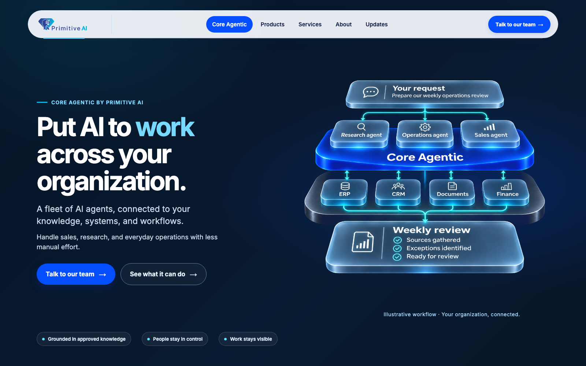
Open full-size image ↗Put AI to work across your organization.
Story role
The live homepage’s weekly operations workflow is reinterpreted as connected 3D blocks. The request, specialist agents, company systems and review-ready report retain the existing story.
Components shown
Frosted glass request and output blocks, three agent blocks on a blue Core Agentic platform, and ERP, CRM, Documents and Finance beneath. Labels are printed on the block surfaces. Hero headline, copy and actions stay in place.
Next: name the repetitive work that slows teams down.
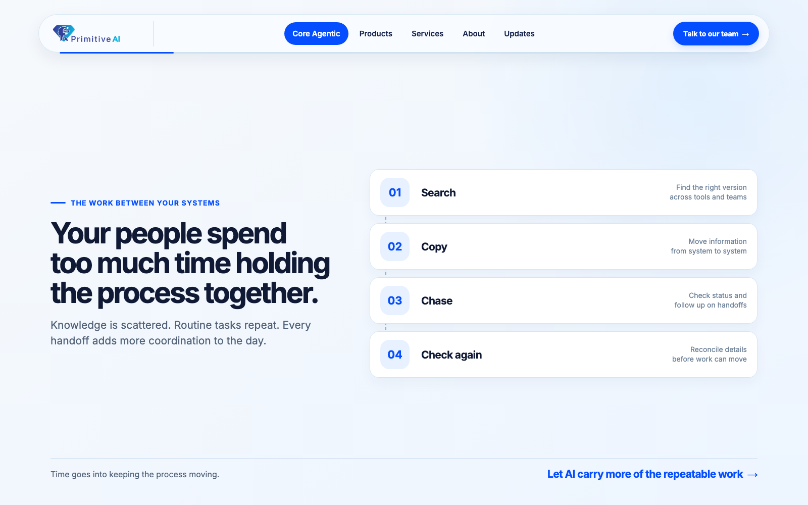
Open full-size image ↗Your people spend too much time holding the process together.
Story role
Make the problem recognizable through the repeated work between systems, without blaming teams or making unsupported claims about errors.
Components shown
One clear problem statement, a four-step Search → Copy → Chase → Check sequence, short explanations, and one bridge line into the solution.
Next: define the outcome as productivity and economics.
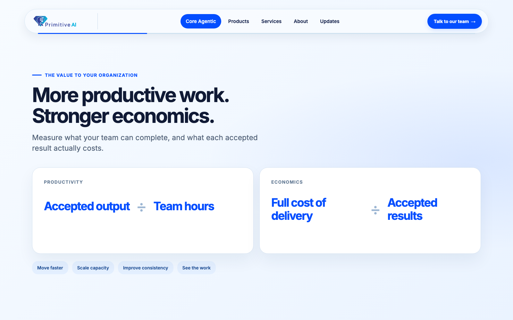
Open full-size image ↗More productive work. Stronger economics.
Story role
Translate the promise into two outcomes that an organization can measure: accepted output per team hour and full delivery cost per accepted result.
Components shown
Two large metric definitions lead. Agility, capacity, consistency and transparency sit beneath as supporting benefits rather than competing headlines.
Next: show how a workflow-level productivity model works.
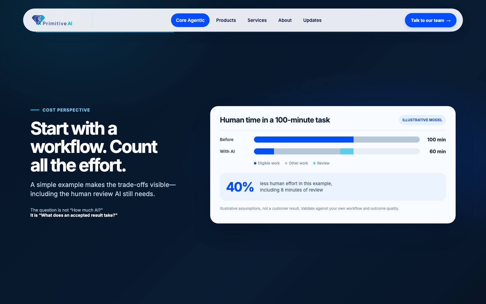
Open full-size image ↗Start with a workflow. Count all the effort.
Story role
Make the economic conversation concrete with the existing 100-minute illustrative model. The visual accounts for remaining eligible work, other work and added review.
Components shown
Before/with AI bars, a 40% lower human-effort example, a visible illustrative-model label, and a reminder to validate against workflow quality. This is not framed as a customer result.
Next: show where the same platform can be configured.
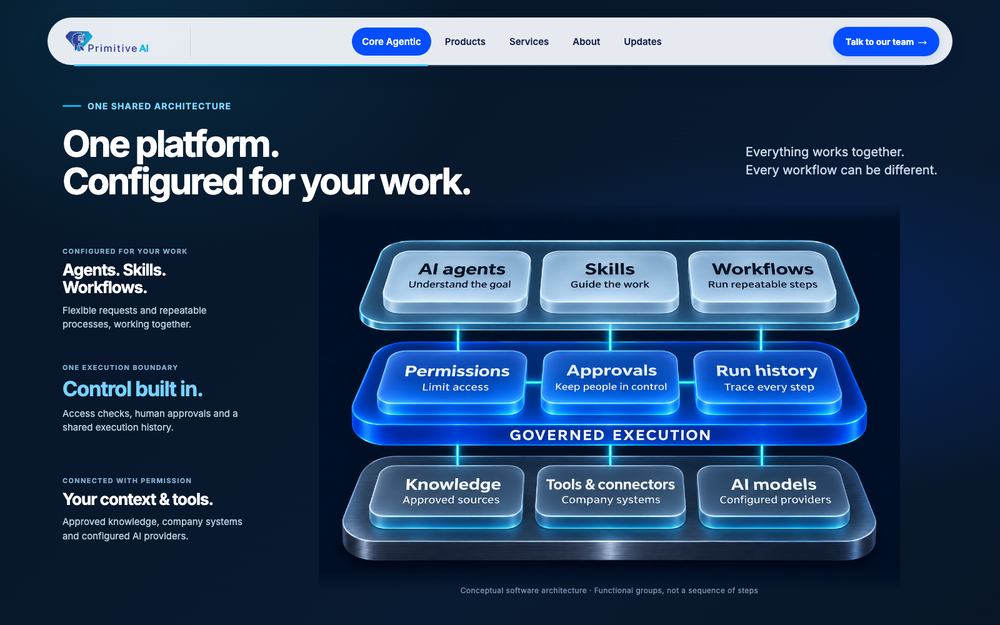
Open full-size image ↗One platform. Configured for your work.
Story role
Show the actual Core Agentic building blocks as one coherent software platform.
Components shown
Surface labels describe AI agents, skills and workflows; permissions, approvals and run history; knowledge, tools and connectors, and AI models. The layers are functional groups rather than sequential execution steps.
Next: connect the platform promise to real organizational experience.
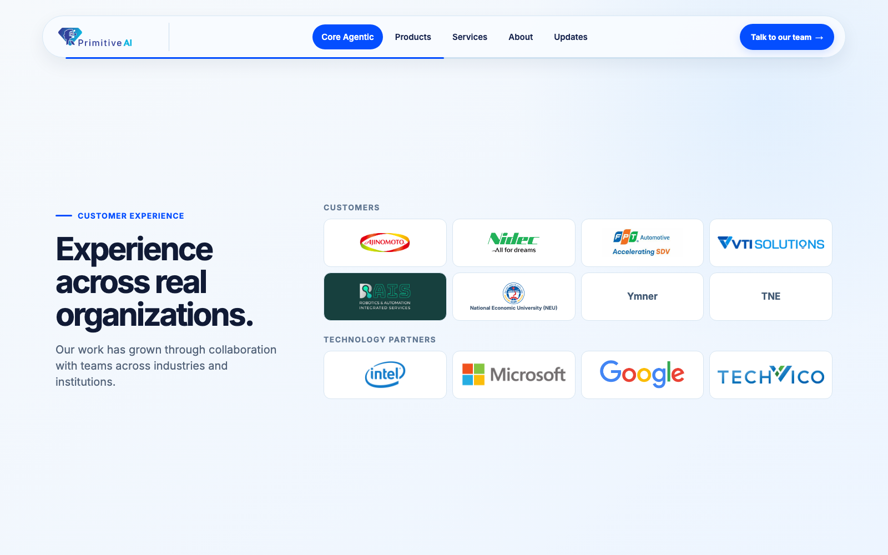
Open full-size image ↗Experience across real organizations.
Story role
Use recognizable relationships as evidence of experience, with the distinction between customers and technology partners kept visually clear.
Components shown
Actual customer marks and names from the current site, including National Economic University (NEU), followed by a separate Intel, Microsoft, Google and Techvico partner row.
Next: show how Primitive AI turns a workflow into a working proof.
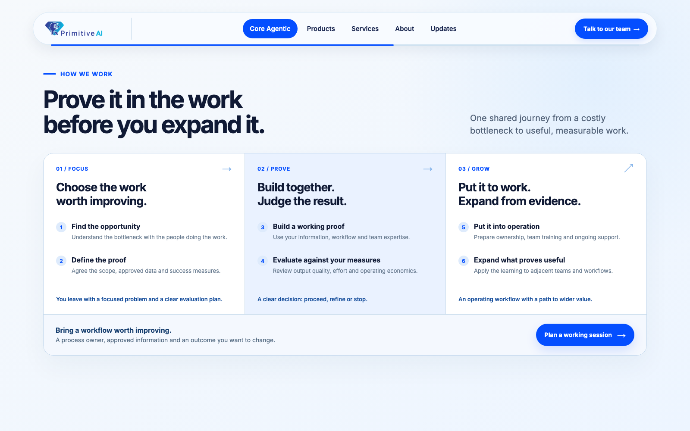
Open full-size image ↗Prove it in the work before you expand it.
Story role
Make the delivery approach one continuous journey with three phases: Focus, Prove and Grow. Each phase contains two concrete steps and one outcome.
Components shown
A single joined panel replaces the scattered six-column timeline. The central proof phase is emphasized; the proceed/refine/stop decision appears there. The working brief and working-session action are integrated into the same panel.
Next: explain how the platform keeps work grounded and reviewable.
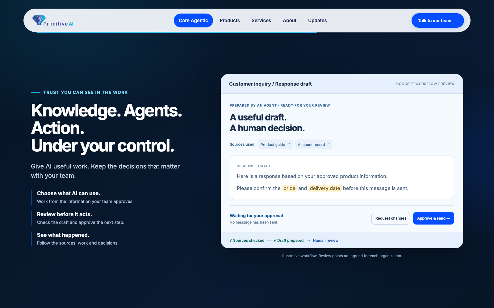
Open full-size image ↗Knowledge. Agents. Action. Under your control.
Story role
Demonstrate control through a concrete task instead of repeating the previous hub illustration: an agent prepares a customer-response draft using approved information, then waits for a person to review it.
Components shown
A new concept workflow window shows source links, a response draft, price and delivery details needing confirmation, request-changes and approval actions, and an activity trail. Three simple statements explain information choice, review and visibility. The window is explicitly illustrative, not a claimed product screenshot.
Next: connect this way of working to the company’s experience.
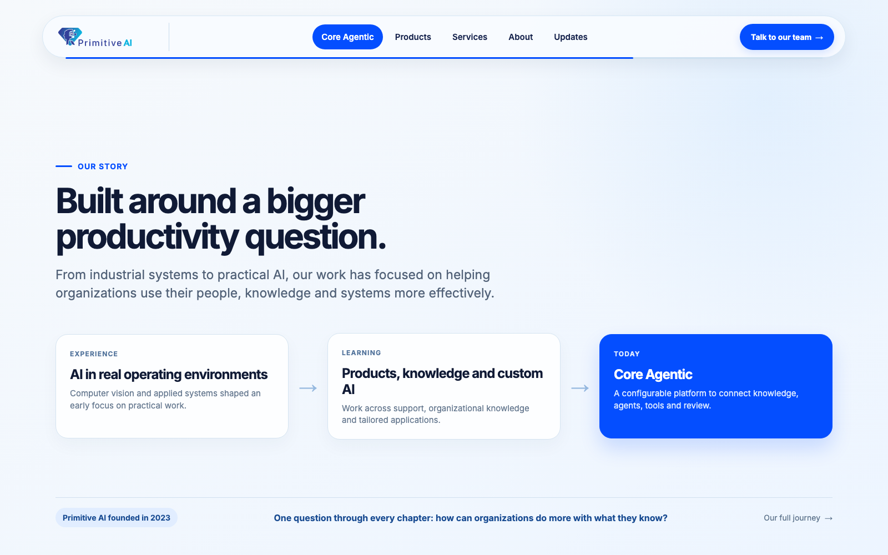
Open full-size image ↗Built around a bigger productivity question.
Story role
Show Core Agentic as a natural synthesis of the company’s practical AI, product, knowledge and custom development experience. This is a homepage summary; the full journey stays on About.
Components shown
Three left-to-right eras, an explicit 2023 company founding marker, the current Core Agentic direction and a route to the full story.
Next: make tailored development a first-class offering alongside the platform.
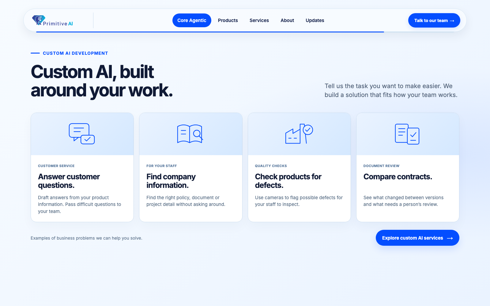
Open full-size image ↗Custom AI, built around your work.
Story role
Make the services immediately understandable through familiar tasks: answer customer questions, find company information, check products for defects and compare contracts.
Components shown
Four direct headings and short explanations replace abstract business language. The cards describe possible customer use cases; they do not claim measured deployment results. The services action remains clear.
Next: read the latest company and product news.
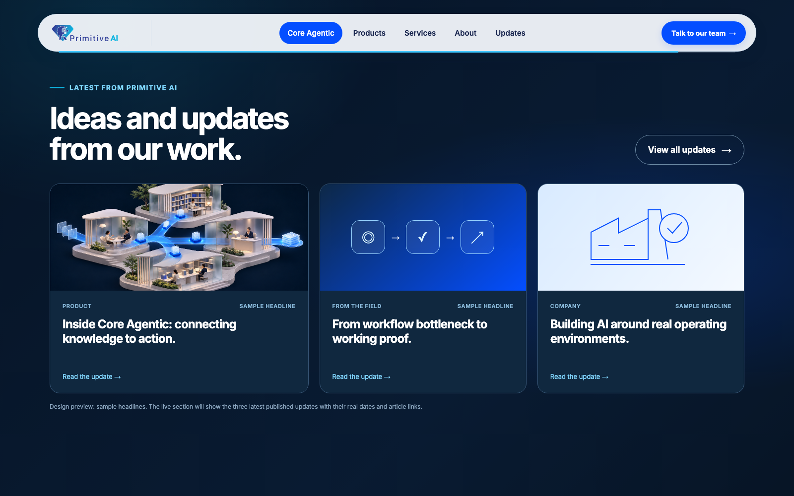
Open full-size image ↗Ideas and updates from our work.
Story role
This is a latest-news preview leading to /updates. The intended live feed contains the three most recent published articles, ordered by publication date.
Components shown
One featured story and two supporting cards have cover imagery, categories, headlines and reading actions. Headlines are visibly marked as samples because the current repository has no published articles. Real content must supply its actual cover, date and article URL. The view-all action points to /updates as requested.
Next: close with an optimistic invitation to improve how the organization works.
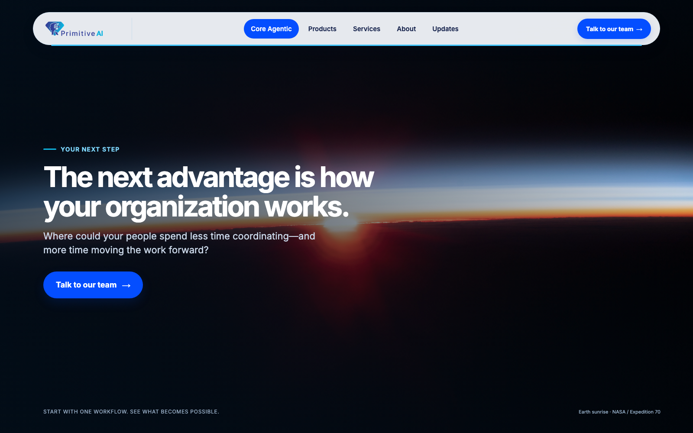
Open full-size image ↗The next advantage is how your organization works.
Story role
An actual photograph of sunrise above Earth’s atmosphere replaces the illustrated globe. It gives the ending a real sense of a new day and forward possibility.
Components shown
NASA’s Expedition 70 photograph ISS070-E-1178 is saved locally and credited on the board. The photograph fills the entire section as a background, with the headline and contact action layered over it. A dark overlay keeps the text readable while preserving the sunrise across the full scene. There is no generated Earth or vector globe in this version.
End: start with one workflow worth improving.